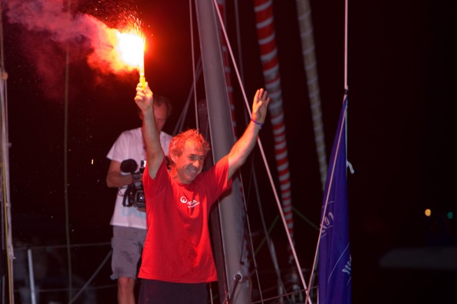

La Transat Jacques Vabre 2007
La Transat Jacques Vabre 2007 s’ouvre à la nouvelle classe des 40 pieds qui aligne trente partants… Les monocoques Imoca sont en force avec 17 équipages ; 8 multicoques 50 pieds et 5 multicoques Orma complètent la flotte. Un record de participation avec 60 bateaux.
La Transat Jacques-Vabre 2007 est la huitième édition de la Transat Jacques-Vabre, aussi appelée La Route du café. Le départ a été donné les 3 (pour les monocoques) et 4 novembre 2007 (pour les multicoques) du Havre avec une arrivée à Salvador de Bahia au Brésil. Le directeur de course au sein de la société Pen Duick qui à ce titre est responsable de la Transat Jacques-Vabre est Jean Maurel depuis l'édition 2005 (il l'est aussi pour la Route du Rhum depuis l'édition 2006).
La course
Du côté des Class40, le match est intense pour le duo italien Giovanni Soldini-Pietro d’Ali qui réalise un parcours sans faute devant Dominic Vittet et Thierry Chabagny.
Franck-Yves Escoffier s’impose une nouvelle fois avec Karine Fauconnier en Multi50.
En Imoca, Michel Dejoyeaux secondé par Manu Le Borgne fait parler la poudre à Salvador de Bahia après avoir été pourchassé par Marc Guillemot et Charles Caudrelier qui arrivent à trois-quarts d’heure derrière…La course a été extrêmement disputée avec pas moins de sept leaders successifs.
Franck Cammas claque sa troisième victoire sur la Transat Jacques Vabre en compagnie de Stève Ravussin, avec un temps canon de dix jours.
Type de bateau
Quatre types de bateaux sont admis à participer :
- Des voiliers multicoque dont la longueur est de 60 pieds soit 18,28 m. Ces bateaux doivent répondre aux règles de la classe ORMA.
- Des voiliers multicoque dont la longueur est de 50 pieds soit 15,24 m. Ces bateaux doivent répondre aux règles de la classe Multi50.
- Des voiliers monocoque dont la longueur est de 60 pieds soit 18,28 m. Ces bateaux doivent répondre aux règles de la classe IMOCA 60 pieds.
- Des voiliers monocoques dont la longueur est de 40 pieds soit 15,24 m. Ces bateaux doivent répondre aux règles de la Class40.
Vainqueurs
Monocoque 40 : Telecom Italia – Giovanni Soldini & Pietro D’Ali (22j13h02min)
Multicoque 50 : Crêpes Whaou ! – Franck-Yves Escoffier & Karine Fauconnier (15j22h27min)
Monocoque 60 : Foncia – Michel Desjoyeaux& Emmanuel Le Borgne (17j02h37min)
Multicoque 60 : Groupama – Franck Cammas & Steve Ravussin (10j00h38min)